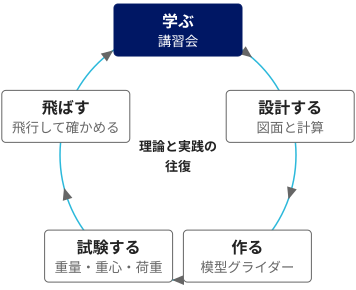

活動内容
講習会で学び、模型飛行機を設計して作り、飛ばして確かめます。2026年度の活動は次の4つです。
学びの進め方

2026年度の活動
講習会（学内）
力学と航空工学の基礎を、会員が分担して講義・演習します。扱うのは、翼に働く力、重心と安定、構造と材料です。
製作を始める前に、工具や接着剤の扱い方を学ぶ安全講習を全員が受けます。飛行に参加する会員は、飛行の手順と関係法令の講習も受けます。
模型飛行機の設計・製作（学内）
模型グライダーなどを、会員それぞれが設計して作ります。重量と重心位置の測定、主翼の静荷重試験など、地上でできる計測と試験で設計が妥当かを確かめます。
模型飛行機の飛行（学外）
飛行試験と飛行会は、近隣の公園などのうち、管理規則で模型飛行機の飛行が認められている場所で行います。場所は選定中です。学内では、模型機を含めて飛行をしません。
実機の文献調査と概念設計
既存の滑空機の文献を調べ、主要な諸元を検討する概念設計の演習をします。実機の飛行は活動に含めません（実機についての方針）。
今年度の予定
| 秋 | 会規則の整備と総会／安全講習と講習会の開始／模型グライダーの設計／飛行場所の候補選びと、管理規則・法令の確認 |
|---|---|
| 冬 | 講習会の継続／模型グライダーの製作と地上試験／飛行試験と飛行会／実機の文献調査と概念設計の演習／活動報告書の作成 |
安全のための手順
安全を最優先に、段階を踏んで進めます。模型機を飛ばす日は、次の順で行います。
- リスクの評価：新しい場所や機体では、周囲の人・建物・道路・樹木・風を洗い出し、対策を決めます。
- ブリーフィング：計画、役割、気象条件、中止の基準を全員で確認します。
- 飛行前の点検：全機体の重量を量って記録し、機体と送信機を点検します。
- 飛行中：周囲から十分に離れ、見張り役を置きます。人が近づいたらすぐ中止します。
- 振り返り：経過と課題を話し合い、ヒヤリハットを共有します。
航空法、小型無人機等飛行禁止法、電波法と、飛行場所の管理規則に従います。
参加を考えている方へ
航空の知識は問いません。まずはDiscordで、気になることを聞いてください。